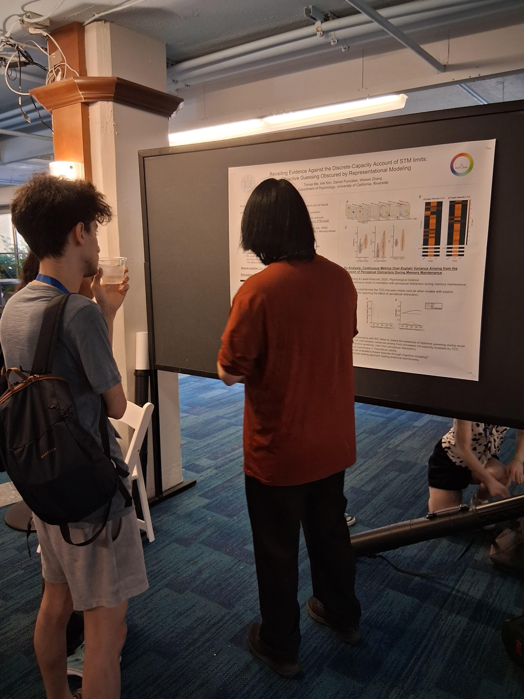

News
-
May 21, 2026
Presented "Revisiting Evidence Against the Discrete-Capacity Account of STM limits: Objective Guessing Obscured by Representational Modeling" at VSS 2026. Thanks for the great feedback (and the fights haha) from everyone! The preprint is on the horizon.
